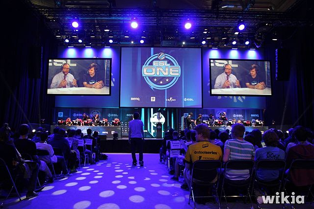

Luiz Felipe Manoel
A ESL é uma marca da Turtle Entertainment é a maior empresa do mundo quando falamos sobre campeonatos de esportes eletrônicos, responsável por realizar campeonatos tanto online quanto off-line de games. Atua com diversos campeonatos como: Intel® Extreme Masters, ESL One, ESL National Championships, e outros eventos de níveis mais altos, além de organizar campeonatos amadores e sistemas de matchmakings a marca é responsável por diversos produtos, organização de eventos, publicidade e diversas outras produções que entram na área de E-sports, fornecendo toda a arquitetura para que o cenário cresca cada vez mais. A empresa tem sedes em diversos lugares como: Estados Unidos, Canadá, Alemanha, Espanha, Rússia, França, Polônia, China e outros parceiros espalhados pelo mundo todo.
* Counter-Strike
* Dota 2
* Halo
* Hearthstone
* Heroes of the Storm
* Mortal Kombat
* SMITE
* StarCraft II
* World Of Tanks
* Rainbow Six
Uma das mais prestigiadas competições de DOTA 2 e Counter Strike Global Offensive, onde os jogadores envolvidos são do mais alto nível e disputam prêmios de centenas de milhares de dólares todos os anos.
O Intel Extreme Masters é um dos mais abrangentes do mundo, iniciou-se em 2006 e tem como principais títulos: Counter Strike Global Offensive, StarCraft II e League of Legends. Ocorrem diversos torneios entre continentes e atualmente está em sua 11º edição.
São o auge da competição online, onde os jogadores profissionais disputam com times vencedores do ESL Go4, que são times em ascensão no mercado, o ponto mais importante desse torneio é abrir portas para novos jogadores profissionais, trazendo reconhecimento para disputarem campeonatos de nível superior. Os finalistas disputam em um ambiente off-line, onde ocorre um evento presencial aberto ao público e os vencedores levam troféus com seus nomes grafados para casa.

Esta categoria é focada em torneios nacionais de diversos jogos e ocorre em um ambiente off-line, onde os melhores jogadores de cada país se encontram para disputar diversos torneios, a cerimônia é lotada de fans de todos os cantos do mundo, e as ligas são ocorrem em países como: Brasil, Alemanha, Inglaterra, França, Polônia, Rússia, Espanha, Hungria, Bélgica, Oceania, Itália, Índia, norte e sudeste europeu.

* RedBull
* BenQ
* Blizzard
* Twitch.tv
* Riot
* Wargaming.net
* Smart Checker